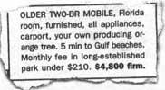

Left: Summer, Kyle, and Brooke Worlton hiking back to their home in the heart of the Cascades (14 miles outside of Brookings, Oregon). Right: Overlooking the coastal range, Summer, Cecilia, and Kyle Worlton heading up cattle.